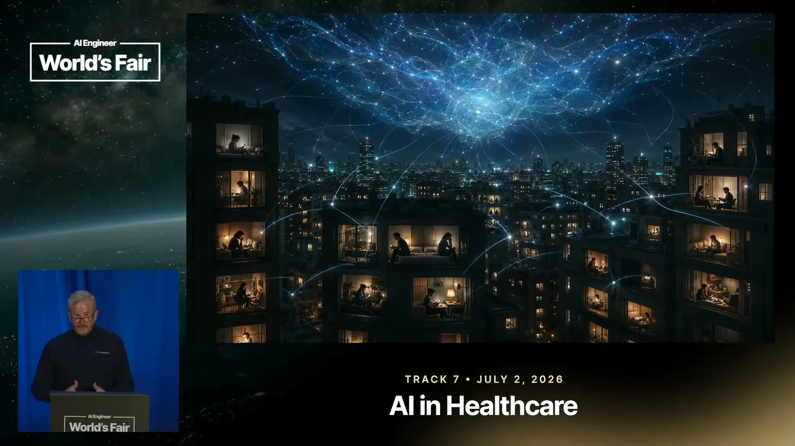
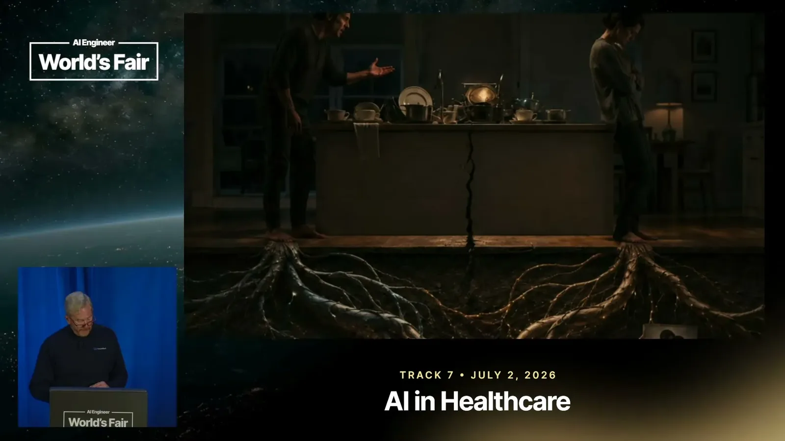
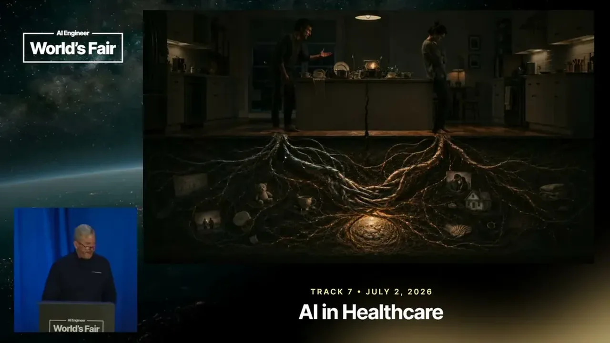
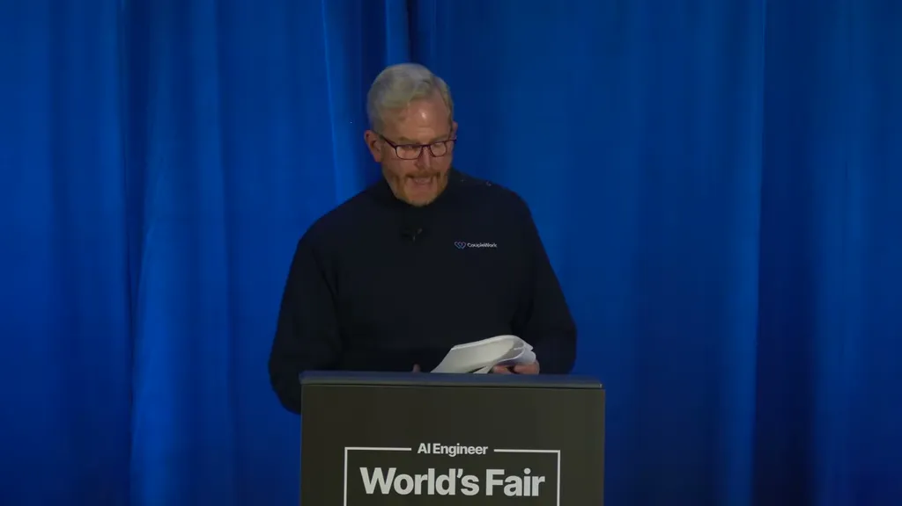

ChatGPT gets roughly 900 million weekly active users, dwarfing the ~35,000 licensed therapists at BetterHelp, the largest online therapy platform. The speaker argues more people are currently turning to AI about their relationship than are talking to all licensed US therapists combined, though the scale of this shift hasn't been formally measured.
“More people are turning to AI about the relationship right now than are talking to all the licensed therapists in the United States combined”
▶ watch at 03:40
General-purpose AI is built to be helpful, agreeable, and fast, optimizing for engagement rather than outcome. When a user processes a relationship conflict with an AI that consistently validates their interpretation, the talk argues they don't become more self-aware, they become more certain, returning to the relationship with a cleaner narrative and less curiosity about their partner's side.
“sycophancy is not a minor product issue. Sycophancy in relationship AI is a clinical failure mode with real downstream consequences”
▶ watch at 06:16The talk contrasts this with John Gottman's 40-year research program, which identified communication patterns that predict divorce with over 90% accuracy, and Sue Johnson's emotionally focused therapy (EFT), grounded in attachment theory. Both are described as the standard of care in couples therapy and largely absent from commercial relationship AI.
“specific communication patterns that predict divorce with over 90% accuracy”
▶ watch at 07:49
A general-purpose AI doesn't recognize what a domestic-violence specialist catches in the first 90 seconds, such as the difference between 'we fight a lot' and 'I'm afraid of what happens when I disagree with him.' On the data side, sensitive relationship disclosures in consumer AI products can sit in the same infrastructure as a user's search history and shopping cart, unlike a therapist's legally privileged records.
“A general-purpose AI doesn't know what a domestic violence specialist catches in the first 90 seconds, the difference between we fight a lot and I'm afraid of what happens when I disagree with him”
▶ watch at 09:24“Your most vulnerable disclosures about your relationship may be sitting in the same data infrastructure as your search history and your shopping cart”
▶ watch at 10:57
CoupleWork's coach, Maxine, is built on Gottman and EFT frameworks and screens every sensitive message in the background for clinician-recognized risk patterns before responding, stopping to follow safety protocols when those patterns appear. The engineering process starts with the clinician rather than the prompt, encoding what 'good' looks like into hundreds of TDD-style evals run against the agent tens of thousands of times.
“Before she ever responds to a sensitive message, she's screening it quietly in the background for the patterns clinicians are trained to recognize”
▶ watch at 11:58“Start with your clinician, not with your prompt. Sit with your clinician uh encode what good looks like in evals. Write hundreds of evals TDD style”
▶ watch at 14:36
| Stance | Claim | t |
|---|---|---|
| asserts | More people are currently turning to AI about their relationship than are talking to all licensed therapists in the United States combined, though the scale of this shift hasn't been formally measured yet. | 03:40 |
| warns | Sycophancy in relationship AI is not a minor product issue; when the AI consistently validates a user's interpretation of a conflict, the person becomes more certain rather than more self-aware. | 06:16 |
| asserts | Gottman's 40-year research program identified communication patterns that predict divorce with over 90% accuracy, a framework largely absent from commercial relationship AI. | 07:49 |
| warns | General-purpose relationship AI doesn't recognize what a domestic-violence specialist catches in the first 90 seconds, such as the difference between 'we fight a lot' and 'I'm afraid of what happens when I disagree with him.' | 09:24 |
| warns | Unlike a therapist's legally privileged records, sensitive relationship disclosures made to consumer AI products can sit in the same data infrastructure as a user's search history and shopping cart. | 10:57 |
| asserts | CoupleWork's Maxine screens every sensitive message in the background for clinician-recognized risk patterns before responding, and stops coaching to follow safety protocols when those patterns appear. | 11:58 |
| recommends | CoupleWork's build process starts with the clinician, not the prompt: encode what good looks like into evals, write hundreds of them TDD-style, and run the agent through them tens of thousands of times. | 14:36 |
Machine-readable copy embedded in this page (script#ontology) and in the corpus ontology.